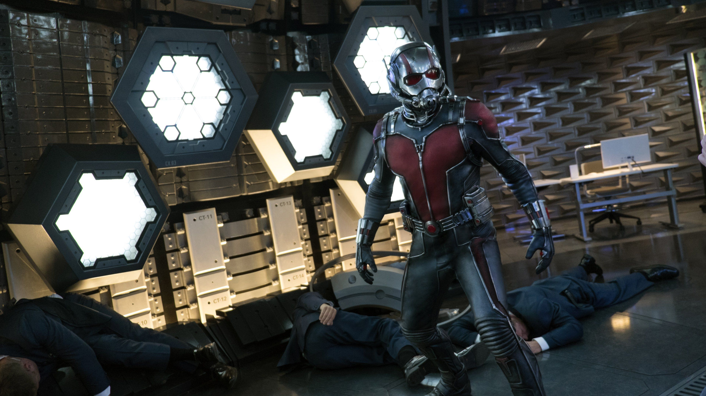

Personnages
 Génie milliardaire et playboy, Tony Stark conçoit une armure high-tech pour combattre le crime.
Son intelligence et son ego en font un leader charismatique des Avengers.
Génie milliardaire et playboy, Tony Stark conçoit une armure high-tech pour combattre le crime.
Son intelligence et son ego en font un leader charismatique des Avengers.
 Un super-soldat né pendant la Seconde Guerre mondiale, Captain America incarne l'honneur et la
loyauté. Son bouclier indestructible et sa combativité font de lui un symbole vivant.
Un super-soldat né pendant la Seconde Guerre mondiale, Captain America incarne l'honneur et la
loyauté. Son bouclier indestructible et sa combativité font de lui un symbole vivant.
 Scientifique exposé à une radiation gamma, Banner se transforme en Hulk lorsqu'il est en colère. Sa
force surhumaine est un atout majeur pour les Avengers.
Scientifique exposé à une radiation gamma, Banner se transforme en Hulk lorsqu'il est en colère. Sa
force surhumaine est un atout majeur pour les Avengers.
 Dieu nordique du tonnerre, Thor manie le marteau Mjölnir. Son sens du devoir et sa puissance font de
lui un protecteur puissant.
Dieu nordique du tonnerre, Thor manie le marteau Mjölnir. Son sens du devoir et sa puissance font de
lui un protecteur puissant.
 Archer hors pair, Hawkeye excelle dans la précision. Membre agile des Avengers, il prouve que même
sans superpouvoirs, on peut être un héros.
Archer hors pair, Hawkeye excelle dans la précision. Membre agile des Avengers, il prouve que même
sans superpouvoirs, on peut être un héros.
 Ancienne espionne russe, la Veuve Noire excelle dans les arts martiaux et l'espionnage. Son passé
complexe la rend redoutable et intrigante.
Ancienne espionne russe, la Veuve Noire excelle dans les arts martiaux et l'espionnage. Son passé
complexe la rend redoutable et intrigante.
 Un groupe hétéroclite composé de Star-Lord, Gamora, Drax, Rocket et Groot. Ils se battent pour
protéger l'univers contre les menaces intergalactiques tout en apportant une dose d'humour.
Un groupe hétéroclite composé de Star-Lord, Gamora, Drax, Rocket et Groot. Ils se battent pour
protéger l'univers contre les menaces intergalactiques tout en apportant une dose d'humour.
 Adolescent mordu par une araignée radioactive, Spider-Man allie agilité et sens de l'humour. Jeune,
mais puissant, il jongle entre sa vie de lycéen et son devoir de super-héros à New York.
Adolescent mordu par une araignée radioactive, Spider-Man allie agilité et sens de l'humour. Jeune,
mais puissant, il jongle entre sa vie de lycéen et son devoir de super-héros à New York.

Cambrioleur repenti, Scott Lang devient le deuxième Ant-Man après avoir volé le costume de Hank
Pym. En rétrécissant à la taille d'une fourmi et en utilisant la technologie Pym, il allie
agilité et force surhumaine. Son humour et son esprit ingénieux font de lui un atout précieux
pour les Avengers.